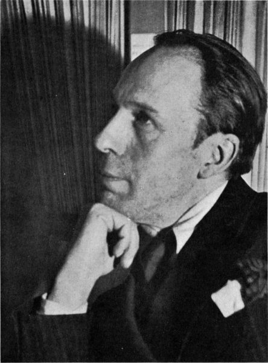
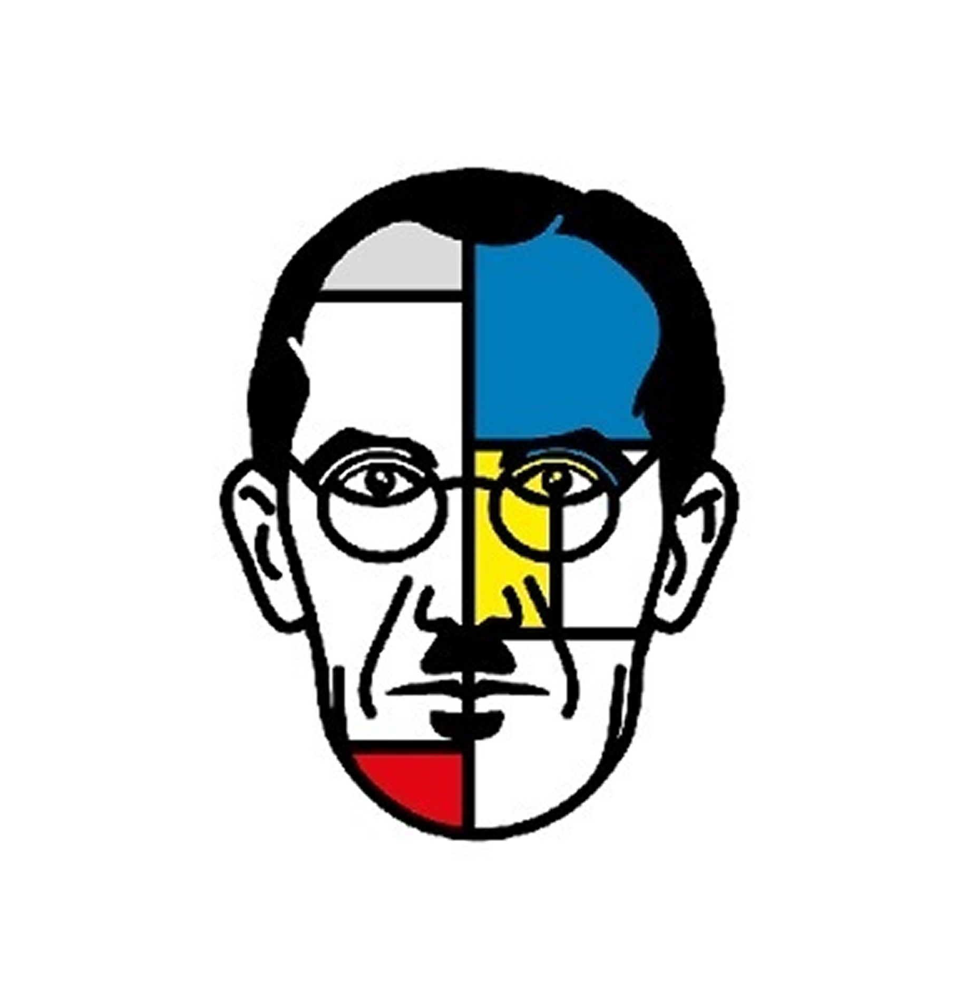
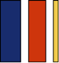
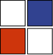
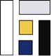

Neoplasticismo
El estilo Universal
Descubre cómo esta vanguardia holandesa transformó para siempre nuestra forma de entender el arte y el diseño.
1917 - 1931
(14 años de duración)
“El artista verdaderamente moderno es consciente de la abstracción en una
emoción de belleza”
PIET MONDRIAN
Línea de Tiempo
1917
Fundación de la revista De Stijl
Manifiesto del Neoplasticismo
1920
1921
Primeras obras completamente abstractas
Casa Rietveld Schröder
1924
1925
Ruptura entre Mondrian y van Doesburg
Fin de la revista De Stijl
1931
Explora De Stijl



Principios fundamentales

COLORES
PRIMARIOS
PRIMARIOS

FORMAS
GEOMÉTRICAS
GEOMÉTRICAS

EQUILIBRIO
MATEMÁTICO
MATEMÁTICO

EXPRESIÓN
UNIVERSAL
UNIVERSAL